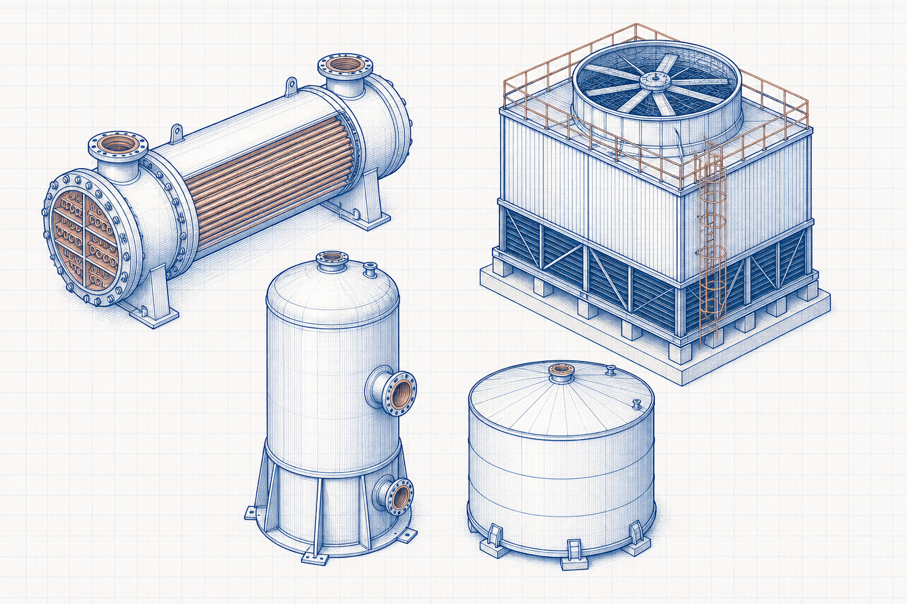

Equipment guide
Pressure Vessel: Working Principle, Components, Types and Applications
A pressure vessel is a closed container designed to hold fluids at a pressure different from ambient. Its safe design and operation depend on the approved design code, pressure/temperature basis, material, geometry, loads, fabrication, inspection and pressure-relief system.

- Content type
- Equipment guide
- Level
- Industrial Equipment › Heat Exchangers, Cooling Systems and Vessels › Pressure Vessels › Vertical Vessels › Pressure Vessel
- Audience
- Student · Design engineer · Project engineer · Plant engineer
- Last reviewed
- 30 August 2026
What Is a Pressure Vessel?
A pressure vessel is a pressure-retaining equipment item that contains gas, liquid or multiphase fluid. It may be vertical, horizontal, heated, cooled, agitated, lined, insulated or connected to other equipment, but the governing code boundary must be defined.
Purpose and Plant Location
Pressure vessels are located in process, utility, storage, separation, reaction, filtration and heat-transfer systems. They provide containment while enabling process residence time, phase separation, reaction, transfer or treatment.
Working Principle
Internal or external pressure creates stress in the vessel shell, heads, nozzles and supports. The equipment must be designed, fabricated, inspected, tested and operated according to the applicable code, service conditions and approved procedures.
Main Components and Their Functions
- Shell and heads
- Provide the primary pressure boundary and overall vessel volume.
- Nozzles and flanges
- Connect process piping, instruments, relief devices and access points.
- Supports
- Transfer vessel and operating loads to the structure or foundation.
- Relief and instrumentation
- Provide safety and monitoring functions within the approved protection philosophy.
Equipment Diagram
Types and Configurations
- Vertical and horizontal vessels.
- Process separators, drums, receivers, filters and reactors.
- Cylindrical, spherical or specialised geometries subject to their code basis.
Main Operating Parameters
- Design pressure, design temperature and operating envelope.
- Fluid properties, corrosion/erosion allowance and process upset cases.
- Material allowable stress, joint efficiency, geometry and nozzle load basis.
- External loads, support arrangement, relief scenario and inspection requirements.
Materials of Construction
Material selection is governed by the applicable code, temperature, pressure, fluid compatibility, corrosion/erosion, toughness, weldability and inspection requirements. A material name alone is not an approved vessel material specification.
Selection Inputs and Engineering Considerations
- Define process duty, design pressure/temperature and all credible operating cases.
- Select the governing code, material basis and inspection category with qualified engineering authority.
- Establish geometry, corrosion allowance, nozzles, supports, loads and relief requirements.
- Develop calculations, drawings, fabrication, examination and test plans under the applicable code.
- Verify manufacturer capability, documentation, inspection and lifecycle integrity requirements.
Installation and Process Interfaces
The vessel interfaces with piping, supports, platforms, insulation, instruments, relief/vent systems, drains, utilities and maintenance access. Thermal movement, nozzle loads, foundation/structure and lifting arrangements must be coordinated.
Operation Fundamentals
Operate within the approved pressure, temperature, fill level, chemistry and relief-protection limits. Changes to service, pressure, temperature, material condition or connections require formal engineering review.
Common Problems, Failure Modes and Causes
- Corrosion, erosion, fatigue or cracking from service conditions or cycling.
- Overpressure caused by blocked outlet, heat input, reaction, fire or other credible scenarios.
- Nozzle or support distress from piping loads or differential movement.
- Leaks from gaskets, flanges, instruments or damaged pressure-boundary components.
Inspection and Maintenance Basics
- Maintain inspection, thickness-monitoring and pressure-relief programmes under applicable requirements.
- Inspect coatings, insulation condition, drains, supports, ladders and platform interfaces.
- Control repairs, alterations and rerating through authorised engineering and inspection processes.
- Retain traceable material, welding, examination and test documentation where required.
Applications by Industry
- Separators, drums, receivers and process hold vessels.
- Filters, reactors, heat-transfer equipment and utility systems.
- Compressed-air and gas-storage applications.
- Chemical, power, water-treatment and industrial-process plants.
Frequently Asked Questions
Is every tank a pressure vessel?
No. Classification depends on design pressure, service, code jurisdiction and the defined equipment boundary.
Can a simple stress formula design a vessel?
No. Final vessel design requires the applicable code, full load cases, materials, fabrication and inspection requirements.
Why are relief devices included?
They are part of the approved overpressure-protection system and must be designed for credible scenarios.
Technical check list
Before relying on this guide
Confirm that the calculation or selection is based on the actual service rather than a nominal description. Identify the current drawing and data-sheet revisions, the operating period represented by measurements, the unit and reference-condition basis, and the responsible person for each critical input. This prevents a valid principle from being applied to an incompatible boundary or outdated condition.
Questions for a competent review
- Does the selected method address the geometry, material, fluid, equipment arrangement and operating range in question?
- Have minimum, maximum, start-up, shutdown, upset, maintenance and future cases been screened where they could govern?
- Are the result, tolerance and rounding appropriate for the quality and uncertainty of the available input data?
- Are plant constraints such as access, isolation, inspection, utilities, controls, safety and environmental duty included in the decision?
- Is there a documented field-verification step before a design, procurement or operating change is approved?
If one of these questions cannot be answered, retain the limitation in the technical record and obtain the necessary evidence or specialist review. The value of an engineering guide is not merely a result; it is a transparent basis for a safe, traceable and practical decision.
Expanded technical guide
Engineering Context and Practical Use
A pressure vessel is a closed container designed to hold fluids at a pressure different from ambient. Its safe design and operation depend on the approved design code, pressure/temperature basis, material, geometry, loads, fabrication, inspection and pressure-relief system. Engineering reference articles should be used with a stated method, representative inputs, current drawings and qualified review for the actual service condition.
Define the physical and operating boundary before selecting equipment, interpreting performance or changing a set point. Consider normal operation, start-up, shutdown, minimum and maximum duty, maintenance condition, upset cases, seasonal effects and credible future modifications. A non-normal case can govern capacity, reliability, integrity, quality, environmental duty or safety.
Data and assessment basis
Define the boundary
inputs → equipment or system → outcome
Identify interfaces, reference points and the actual decision the assessment supports.
Use compatible data
result = valid method + representative inputs
Record units, service condition, source revision, material or fluid basis and uncertainty.
Check the limit
normal case ≠ governing case
Review the condition that controls capacity, reliability, safety, serviceability or performance.
Verify the result
assessment ↔ field evidence
Compare the conclusion with inspection, measurements, supplier limits and controlled documents.
Practical engineering method
- Define the duty, system boundary, required decision and applicable project or code basis.
- Collect current drawings, data sheets, service properties, operating trends and maintenance history.
- Set normal, minimum, maximum, start-up, upset and future cases that are relevant to Pressure Vessel: Working Principle, Components, Types and Applications.
- Select a method appropriate to the actual configuration and valid range.
- Review interfaces with utilities, controls, access, inspection, isolation and protection systems.
- Test important sensitivities where uncertainty could change the decision.
- Record inputs, sources, limitations, reviewer actions and field-verification requirements.
Operation, maintenance and reliability
Operating condition
Trend the parameters that reveal loss of duty, integrity, quality or environmental performance.
Maintenance access
Provide safe isolation, inspection, cleaning, lifting, spares and reinstatement for the actual arrangement.
Controls and safeguards
Check alarms, trips, interlocks and manual actions over the complete operating envelope.
Change management
Reassess after changes to material, load, fuel, layout, component, software, control or operating procedure.
Field verification
Use calibrated measurements at defined locations and comparable operating conditions.
Competent review
Escalate specialist, code, safety, environmental or supplier decisions beyond this educational scope.
Common decision errors
- Using an obsolete drawing, data sheet, property value or equipment limit.
- Mixing design, actual and reference conditions without a controlled conversion.
- Checking one normal case while missing the governing condition.
- Ignoring maintenance, access, isolation, controls or downstream consequences.
- Claiming precision greater than the evidence supports.
- Treating educational guidance as final design, safety, procurement or compliance approval.
- Failing to update the basis after a controlled change.
Lifecycle Evidence, Field Verification and Change Control
Pressure Vessel: Working Principle, Components, Types and Applications should remain connected to current evidence throughout its service life. Material variation, wear, fouling, corrosion, temperature, loading, contamination, control changes, maintenance practice and upstream process variation can change the basis on which equipment or a calculation was originally selected.
Maintain a usable evidence set
Record whether each important input is measured, calculated, supplier-rated, estimated or assumed. Retain the source, revision, date, units, reference condition, measurement location and expected uncertainty. This prevents a result from being compared with an obsolete data sheet, a different operating case or a measurement taken at another system boundary.
Use equivalent operating conditions when comparing field trends. Document production load, material or fuel condition, relevant pressure and temperature, equipment configuration, controls, instruments and maintenance state. A plausible trend can be misleading if these conditions are not comparable.
Check the actual governing condition
Review normal operation as well as start-up, shutdown, low load, maximum duty, dirty condition, maintenance bypass, upset, seasonal effect and credible future modification. The governing case may control capacity, reliability, integrity, emissions, quality, energy, electrical duty, serviceability or safety.
If reasonable uncertainty changes a decision, improve the evidence through inspection, representative testing, calibrated measurement, supplier confirmation, a controlled trial or specialist analysis. This is more valuable than reporting extra decimal places from an uncertain basis.
Turn maintenance into engineering information
Inspection findings can reveal local wear, leakage, buildup, cracking, corrosion, misalignment, overheating, abnormal vibration, control instability or loss of access that simple selection methods do not show. Record the location, condition, observed mechanism, action and follow-up result so future decisions use the actual service history.
Define the early-warning parameters, review trigger, responsible role and escalation path. Repeated alarms, manual intervention, rising energy, pressure loss, reduced capacity, dust release, unstable flow or recurring component damage should be investigated as system evidence, not reset as isolated symptoms.
Implement controlled change
Before changing material, equipment, layout, settings, controls, operating procedure or maintenance practice, check affected drawings, equipment limits, protective functions, isolation requirements, permits, training, spares and downstream interfaces. A local improvement can move a problem to another part of the system.
After implementation, compare measured performance with stated acceptance criteria at comparable conditions, update the controlled record and document any remaining limitation. This page is an educational reference; final project, code, safety, environmental, electrical and procurement decisions require qualified review with current site information.
Core engineering extension
Technical Basis, Interpretation and Engineering Limits
Pressure Vessel: Working Principle, Components, Types and Applications is a core engineering subject because it connects directly to how a system is defined, selected, analysed, operated or maintained. A correct result depends on a clear boundary, compatible data, an appropriate method and an understanding of what the method does not include.
Define conditions before applying a relationship
State the material or fluid, geometry, equipment configuration, pressure, temperature, load, flow, reference condition and operating point that each value represents. Distinguish design data from measured data, nominal ratings from actual performance, and a controlled specification from a preliminary estimate. A technically correct relationship can give an unsuitable answer when its inputs represent another condition.
Build the calculation or assessment from a transparent sequence: define the decision; identify the control volume or physical boundary; collect reliable inputs; state assumptions; apply a method within its valid range; compare the result with independent evidence; and record the limitation or next verification action. This makes the work reviewable and helps operators and maintainers understand what the result means.
Use dimensionally consistent data
Keep units, reference state and property basis consistent. Check whether a pressure is absolute or gauge, a temperature is suitable for the selected relationship, a density or property belongs to the actual material condition, a flow is mass or volume based, and a value is instantaneous, rated, average or maximum. Unit conversion is not merely arithmetic when reference conditions differ.
Where a method produces a precise numerical value, compare its likely uncertainty with the quality of the input data. Report a sensible number of significant figures and make clear which input has the greatest influence. If uncertainty could change a decision, obtain better field data or a specialist calculation rather than adding unsupported precision.
Connect theory with equipment behaviour
Real systems contain fittings, interfaces, fouling, wear, leaks, heat loss, bypasses, controls, vibration, access constraints and non-uniform conditions. Use field observation and maintenance findings to determine whether the simplified model still represents the installation. A difference between predicted and observed behaviour is evidence to investigate, not automatically an error in either result.
Review start-up, shutdown, minimum load, maximum duty, dirty condition, maintenance condition, upset and future modification. These cases can govern a different limit from normal operation and may require another method, another safety margin or a changed operating procedure.
Illustrative review approach
A practical review starts by comparing the intended duty with current measured behaviour, then checks assumptions, units, data source, boundary and interfaces. If the difference remains meaningful, inspect the equipment and process conditions, test the sensitive variables and identify whether the correct action is data collection, maintenance, operating adjustment, redesign or qualified specialist review.
Retain the calculation, source information, test record, limitations, reviewer comments and change history. This preserves the engineering basis through design, commissioning, operation and maintenance and prevents an educational guide from becoming an uncontrolled project instruction.
Expanded FAQs
What should be established first?
Establish the actual system boundary, relevant service condition, required decision and governing case for Pressure Vessel: Working Principle, Components, Types and Applications.
Why is normal operation not enough?
Start-up, low-load, peak, maintenance, upset and future cases can control different limits.
Which records should be retained?
Keep inputs, source and drawing revisions, assumptions, results, limitations, review record and verification evidence.
When should the assessment be repeated?
Repeat it after a material, equipment, route, load, control or operating-procedure change.
How should the result be checked?
Use inspection and calibrated measurements at the same boundary and condition basis.
Can this page approve final project work?
No. Final design, code, safety, procurement and compliance decisions require current project information and qualified review.
Why involve operations and maintenance?
They identify practical limits involving access, isolation, cleaning, reliability and actual behaviour.
What makes input data representative?
It matches the actual material, configuration, service, source revision, measurement location and operating condition.
What is an important limitation?
A simplified guide cannot include every site-specific geometry, degradation mechanism, safeguard or code requirement.
What should be reviewed after commissioning?
Compare performance, condition, alarms, losses, quality and maintenance findings with the documented basis.
How should unexpected behaviour be handled?
Verify the data and boundary, investigate the difference and follow the approved technical-review or change-management process.
Applied engineering review
Pressure-vessel design basics: decision basis and field verification
Establish the design pressure and temperature, material, corrosion allowance, geometry, loads, service category, fabrication basis, inspection requirement and governing code before treating a thickness result as meaningful. External pressure, nozzle loads, supports and cyclic service can control the design.
Evidence before action
Use controlled drawings, material records, thickness readings, relief-device data, process limits, welding and inspection records and calculated load cases. Confirm that field condition, damage mechanisms and alterations remain within the documented basis. The technical record should show the source revision, unit basis, measurement location, operating mode and known limitations so that another competent person can reproduce the conclusion.
Review sequence
- State the decision that the assessment must support and establish the system boundary.
- Gather current drawings, data sheets, operating records, inspection evidence and applicable project or code requirements.
- Define normal, limiting, start-up, shutdown, upset and future cases that are relevant to the service.
- Use a method whose assumptions, property basis and validity range match the actual arrangement.
- Check the outcome against independent measurements, supplier information or physical evidence.
- Record sensitivity, uncertainty, actions, owner and any required follow-up measurement or inspection.
Limitations and safeguards
Important review points are pressure containment, brittle fracture, corrosion, fatigue, vacuum collapse, relief sizing, access, lifting, inspection, repair control and statutory requirements. This educational page supports preliminary understanding and does not replace a controlled design calculation, manufacturer instruction, safety study, statutory inspection or review by a qualified engineer.
Decision record
Before implementing a change, retain the governing case, key assumptions, source data, result, reviewer comments, verification plan and change-control reference. Reassess the conclusion when the material, geometry, operating condition, control arrangement, equipment condition or governing requirement changes.
Literature-informed technical note
Pressure-vessel stress-analysis limitations
Reference works on shells, pipes and pressure vessels are useful for understanding load paths and stress states, but a formula is not a vessel design code. Pressure containment also depends on design pressure and temperature, corrosion allowance, material and weld condition, geometry, openings, local loads, supports, fatigue, external pressure, relief protection, inspection and the governing statutory or code basis.
State whether a simplified thin-wall relation is being used for illustration, screening or a controlled design check. Confirm that shell proportion, material behaviour, loading, discontinuities and temperature are within its assumptions. A qualified engineer must review final thickness, nozzle, support, fatigue, vacuum and relief decisions against current project information and applicable requirements.
Literature reviewed for this update
- W. C. Young and R. G. Budynas, Roark’s Formulas for Stress and Strain, 7th ed.
- R. S. Khurmi, Strength of Materials.
This is an original educational summary based on the listed literature. It does not reproduce protected source text, figures, tables or design data. Confirm current standards, project documents and supplier information before use.
References
- Moss, D. R. and Basic, M. Pressure Vessel Design Manual. 4th ed. Gulf Professional Publishing. 2013.
- Megyesy, E. F. Pressure Vessel Handbook. 14th ed. Pressure Vessel Publishing. 2008.
This page is an original educational summary. It does not reproduce protected book text, tables, figures or standards material.